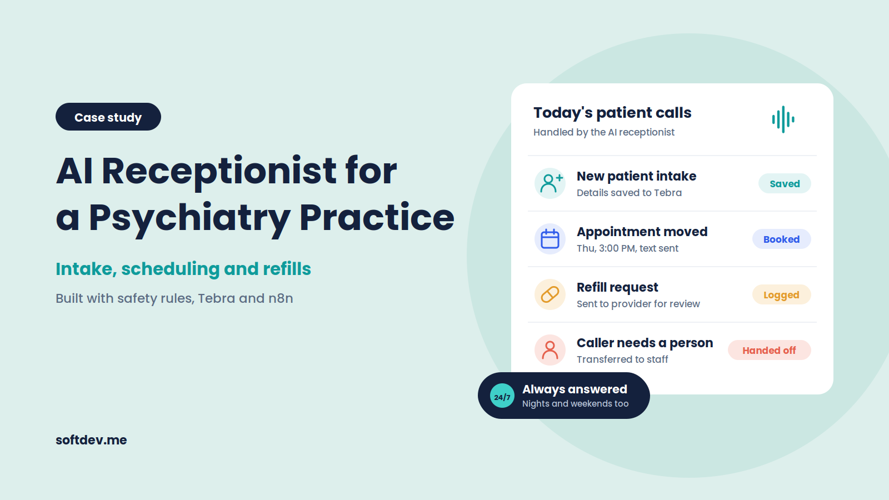
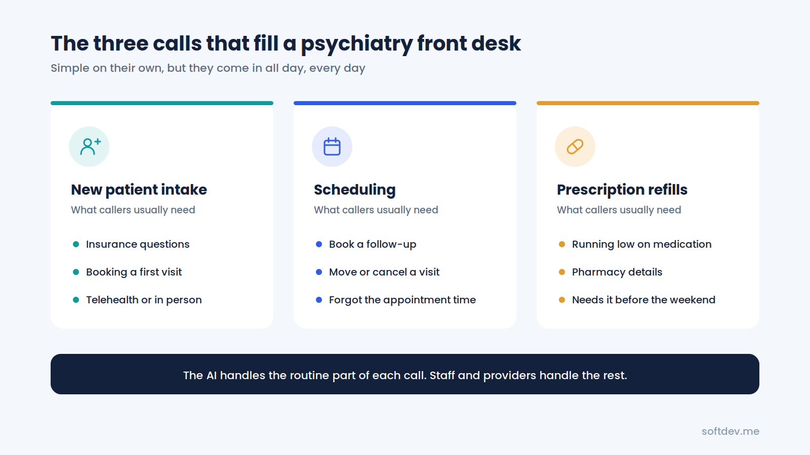
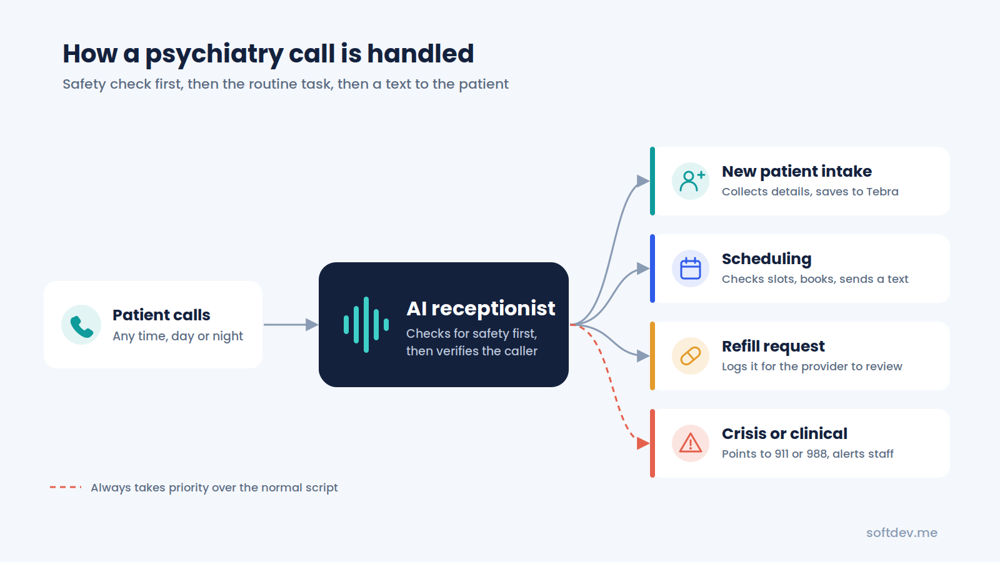
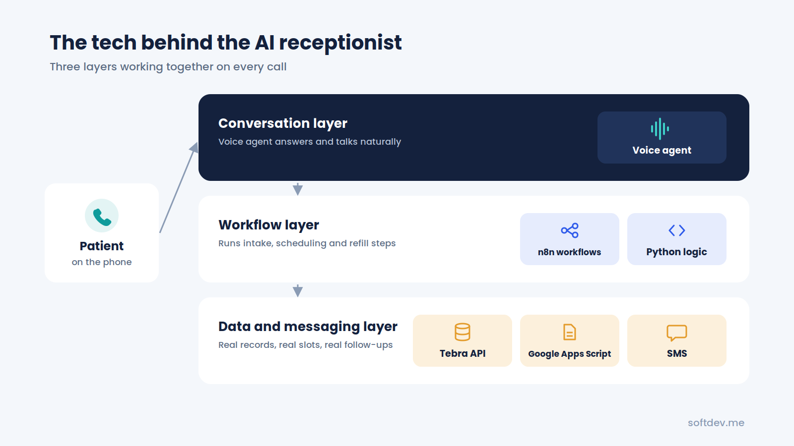
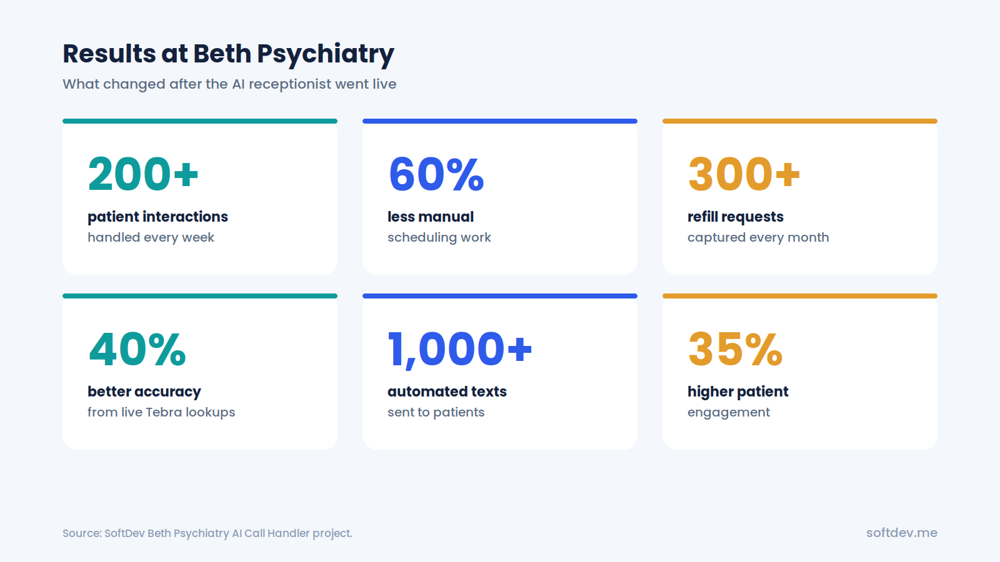

Building an AI Receptionist for a Psychiatry Practice: Intake, Scheduling and Refills
How we built an AI receptionist for a medical practice's patient intake and scheduling, with live Tebra integration and safe crisis handling.

TL;DR - 6 takeaways - 15-second read
- Psychiatry front desks spend much of the day on the same three calls: new patients, appointments, and refills.
- We built an AI voice agent for Beth Psychiatry that handles all three, 24/7.
- It connects to Tebra through n8n and Python, so it checks real records and real schedules during the call.
- The AI collects refill requests but never approves medication. A provider always makes that decision.
- Any caller in crisis is pointed to 988 or 911 right away and flagged for staff.
- The agent now handles 200+ patient interactions a week and has cut manual scheduling work by 60%.
Introduction
As a mental health practice, you know the calls can pile up at the front desk. Someone is asking about insurance, someone needs to change their appointment, and someone else is requesting a prescription refill.
While every caller may seem like an individual, there are times when the front desk gets busy juggling messages, appointments, and medical records. In the meantime, calls go unanswered, voicemails get left, and patients struggle to get the help they need in a timely manner.
Beth Psychiatry wanted a solution that could help answer these calls, schedule appointments, and ensure refill requests reached the right person. That's when we decided to create an AI receptionist.
In this article, we'll explore how we built it, how it integrates with Beth's tools, and the insights we gained along the way.
Why Phone Calls Can Be Tough for Psychiatry Practices
Most medical practices understand the challenge of a busy phone line. However, mental health practices face some unique considerations. For one, it can be difficult for patients to make that first phone call. Opening up over the phone can be emotionally challenging, and if a caller doesn't get an immediate response, they may be more likely to hang up and try again — or not try at all.
According to the American Psychological Association, 39% of patients at one mental health clinic didn't show for their first appointment. Another study from a psychiatry practice at UT Houston found 31% of new patients didn't attend their first visit, with the primary reason being forgetfulness. Even if a patient calls back, they still may be left waiting if the front desk is busy.
Finally, prescription refills can't always wait. Patients who take psychiatric medications may call to report that their prescription is empty or will be empty soon. A refill request may need to go immediately to the provider, especially if the patient calls on a Friday afternoon for an upcoming Monday refill.
On top of everything else, the front desk is responsible for other duties in addition to phone calls. From greeting patients, to filing insurance, to completing patient paperwork, the staff can only handle so much before calls go unanswered.

This is all a challenge for an AI receptionist. Let's look closer at what we built for Beth Psychiatry.
What We Built
Beth Psychiatry needed a simple, effective way to handle routine phone calls that doesn't require patients to deal with long hold times or a confusing phone tree.
We built an AI receptionist that could answer the phones and help patients with their requests, from new patient intakes to prescription refills.
We also made sure it could integrate with the tools Beth already uses. Using n8n and Python, we connected the AI voice agent to Tebra, which handles scheduling and records management. This allowed the AI to pull up patient information in real-time, even while the phone call was in progress.
Let's break down exactly what our AI receptionist could do.
1. New Patient Intake
A call from a new patient can be a tricky balancing act. We wanted our AI receptionist to make the interaction as seamless as possible.
Our voice agent can answer basic questions about the practice, learn the caller's name, and gather the information the front desk typically collects for a potential new patient, including:
- Name, date of birth, and contact information
- Insurance
- Brief description of what they're looking for in care
- Availability for an appointment
- Preference for in-office or telehealth
The AI agent won't ask medical questions or attempt to serve as a therapist. It will collect the necessary information and leave the next steps to the receptionist staff.
2. Appointment Scheduling
Handling appointment scheduling can be one of the most time-consuming aspects of managing a psychiatric practice. Patients call to schedule, reschedule, and sometimes cancel their visits.
Instead of asking the patient to leave a message, our AI receptionist can handle appointment requests with the following process:
- The AI agent identifies the caller as a known patient and pulls up their records.
- It accesses Tebra to find available appointment times with the patient's preferred provider.
- The agent shares those options with the caller.
- The patient selects the time that works best for them, and the AI schedules the appointment.
- The patient receives an SMS confirmation right after the call ends.
By allowing the AI to handle appointment scheduling, patients receive a more convenient experience, and the front desk can spend more time on the calls that actually require their help.
3. Refill Requests
Refill requests need to be taken seriously. Patients have to report any issues with their medication, the refill request has to be approved by the provider, and the next script needs to be sent to the pharmacy.
Our AI receptionist can gather the necessary information to make the request, but the final approval and decision are always up to the provider. The process works this way:
- The receptionist agent answers the call and asks for the patient's name.
- The patient provides the name of the medication, dosage, pharmacy, and any other information needed to submit the refill request.
- The agent shares a text message confirming the request and letting the patient know what to expect next.
- The request is sent to the appropriate staff member for approval and fulfillment.
This prevents patients from getting stuck on hold or sending an email that could be buried among other messages.
How a Call Works
From the patient's perspective, the process is simple. When they call, the AI receptionist answers and asks how it can assist them.
Behind the scenes, there are a number of different actions the agent takes, depending on the caller's needs.
From the moment the patient calls in, here's what happens:
- The patient calls the practice. The AI receptionist answers and identifies the reason for the call.
- Crisis de-escalation procedures are followed if the caller is discussing a potential suicide, self-harm, or any other life-threatening situation.
- The caller is asked for identifying information if it's necessary to pull up their records in Tebra.
- The appropriate database is searched using n8n, Python, and the Tebra API. After pulling up the necessary information, the AI receptionist performs the requested action.
- The patient receives an SMS confirmation if needed, and the staff receive a summary of the call for their records.

The AI receptionist isn't expected to be able to handle every situation on its own. If the caller needs something the AI doesn't have the ability to do, or if the patient requests to speak with a receptionist, the call will be forwarded or held according to standard procedure.
Safety First: Crisis Calls and Other Considerations
When building an AI receptionist for a mental health practice, it's important to think beyond convenience. The AI has to know when to defer to staff, especially in high-stakes situations, and avoid giving out any medical advice.
We took several precautions to ensure the AI receptionist followed safety guidelines.
Calls Regarding Suicide, Self-Harm, or Crisis
If a patient calls inquiring about or reporting suicide, self-harm, or any other emergency, the AI receptionist should follow appropriate de-escalation procedures.
It should inform the caller that the best course of action is to call 911 or the Suicide & Crisis Lifeline at 988 and let them know that a member of the staff will also be available to assist them.
Controlled Medications
Some psychiatric medications are classified as controlled substances. The AI receptionist isn't qualified to provide any information about them or process a refill request.
When a patient calls to inquire about a controlled substance, the AI should forward the call to the appropriate staff member or ask to leave a voicemail with the necessary information.
Medical Advice
Patients may call with questions about mental health, such as the side effects of medication or whether a change in their treatment plan is necessary.
The AI doesn't have the training or licensure to give medical advice. It should direct the caller to their provider or let them know they can send an email with their questions.
Getting a Human Operator
Patients should always have the option to speak with a human operator if they prefer.
The AI receptionist should be programmed to transfer or respond to questions according to a practice's protocols.
We worked with Beth Psychiatry to outline these procedures and test them before the final launch. When building a system for a healthcare practice, it's far better to anticipate limitations and set expectations than to exceed them.
The Tools That Power the AI Receptionist
We wanted to work with familiar tools whenever possible. We made strategic additions to Beth's existing tech stack that allowed the AI receptionist to perform the tasks listed above.
Here are the tools we used and their purposes:
| Tool | Purpose |
|---|---|
| Voice agent | Answers the phone and communicates with the caller |
| n8n | Handles the workflows for new patient intakes, scheduling, and refill requests |
| Python | Assists with additional coding as needed for the workflows |
| Tebra | Gives the AI access to patient information and the scheduling system |
| Google Apps Script | Assists with existing forms and Google Workspace tools |
| SMS | Sends patients appointment confirmations and other information |

The most crucial piece of software in this list is the connection to Tebra.
We needed to give the AI access to patient records so it could schedule appointments and process refill requests in real-time. Without that connection, the AI would simply take notes and ask the receptionist to follow up later. By using n8n and Python to access the Tebra API, we gave the AI the ability to do much more.
Information Confidentiality and HIPAA Compliance
Mental health practices have to be especially mindful of their patients' privacy. We took a number of different steps to ensure the AI receptionist followed HIPAA guidelines and didn't jeopardize any patient information.
When designing an AI system for a mental health practice, there are a number of privacy and confidentiality best practices to keep in mind:
| Best practice | What it means |
|---|---|
| Caller verification | Always verify the identity of the caller before pulling up or sharing any information. |
| Information collection | Collect only the information you need from the caller. |
| Approved applications | Always use approved applications to access, store, and share patient information. Avoid using spreadsheets or other insecure methods. |
| Text message security | When using SMS to confirm appointments, keep the message brief and avoid giving any patient-specific information beyond what's necessary. |
| Vendor requirements | Vendors that provide applications or services that handle protected health information may have specific requirements under HIPAA. The practice should determine what those requirements are and work with the vendors to establish appropriate agreements. |
Anyone considering an AI receptionist for their mental health practice should also work with their compliance team or a qualified healthcare attorney to determine the best steps for their practice's needs.
Results Following the Launch
After Beth's AI receptionist launched, it began handling the routine phone calls that free up the front desk staff to focus on more essential tasks. According to the Beth Psychiatry AI Call Handler project, some of the results included:
| Result | Details |
|---|---|
| 200+ weekly patient interactions | Handled by the AI as opposed to the front desk |
| 60% reduction in manual scheduling | Reducing the time spent on scheduling and rescheduling appointments |
| 300+ monthly refill requests | Captured and sent to the appropriate staff members |
| 40% improvement in data accuracy | Aided by the AI making live requests in Tebra |
| 1,000+ weekly SMS messages | Sent to patients |
| 35% increase in engagement | With patients |

These stats give us a good look at the types of administrative tasks an AI receptionist can handle for a small mental health practice. Beyond that, it's also important to understand the qualitative results. Front desk staff have more time to focus on in-person visitors, and patients who call outside of regular business hours have another option for making an appointment, leaving a message, or getting a prescription refill.
For small practices, this can make a world of a difference.
What We've Learned
Developing an AI receptionist has taught us a few important lessons about working in the healthcare space. Most importantly, we learned that it's best to start with the administrative tasks that consume the most time.
Scheduling and refill requests are excellent places to start because they're repetitive and have set guidelines. From there, we made sure to set boundaries regarding crisis calls, medical advice, and medications. We also kept the language simple and the tone calm to help anxious patients feel more comfortable.
Above all, we made sure to leave the clinical decision-making to the providers and allow the front desk staff to handle whatever a patient brings to them. Finally, we continued to refine the process based on real-world interactions. After all, sometimes the best way to learn what an AI receptionist can and can't do is to try it out with real patients.
Should Your Practice Have an AI Receptionist?
An AI receptionist may be right for your mental health practice if:
- The front desk spends a large amount of its time on the phone, especially with patients
- A large portion of those calls are about scheduling, rescheduling, or refill requests
- Your front desk staff is spending too much time on voicemail or calling patients back
- Your practice uses an electronic health record or scheduling software that has an open API, such as Tebra
- You want to reduce the administrative workload without adding a full-time receptionist
That being said, an AI receptionist isn't right for every practice. If your practice doesn't get many phone calls, or if those calls are more about clinical care than scheduling or refills, it's probably best to invest in a better voicemail system and processes for letting patients speak with a human operator.
Another option may be an online appointment scheduler that integrates with the tools you already use, such as Google Calendar. Every practice is different, so it's important to consider your specific needs before making a decision.
Conclusion
For a mental health practice, a phone call can be the difference between a patient getting the care they need and walking away without one. Making that call easier can be a huge relief for patients and staff alike.
At Beth Psychiatry, we built an AI receptionist that could handle new patient intakes, scheduling, and prescription refill requests. By integrating it with Tebra through n8n and Python, we made sure it wasn't just taking messages. Instead, it could make changes to the calendar and pull up patient information in real-time.
Perhaps more importantly, we made sure the AI knew when to let a human take over. Whether it was a crisis call, a question about medication, or a request for something the AI wasn't ready to handle, the AI knew when to get help.
By doing this, we created a tool that supplemented the front desk staff without replacing them. For a busy mental health practice, that can be an excellent way to reduce the administrative workload and spend more time with patients.
Frequently asked questions
Is an AI receptionist right for a mental health practice?
It can be, if certain precautions are taken. An AI receptionist can handle the time-consuming, repetitive tasks of a front desk receptionist while leaving complex or sensitive calls to the staff.
Can an AI receptionist approve a prescription refill?
No, but it can gather the information needed to approve the refill and submit it to the physician or pharmacist.
Can it integrate with Tebra?
Yes. The Beth Psychiatry AI Call Handler project used n8n and Python to integrate the AI voice agent with Tebra.
Isn't this a HIPAA compliance issue?
It can be, if appropriate precautions aren't taken. The AI receptionist should be configured to limit access to protected health information, use secure hosting and data storage solutions, and ask for proper authorization before accessing any patient information. Reviewing these precautions with a compliance expert is always a good idea.
How long does it take to build an AI receptionist?
It depends on the scope of the project, but a basic AI receptionist that can handle intake, scheduling, and refill requests may only take a few weeks.